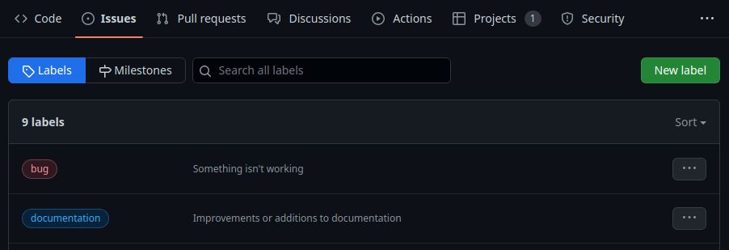
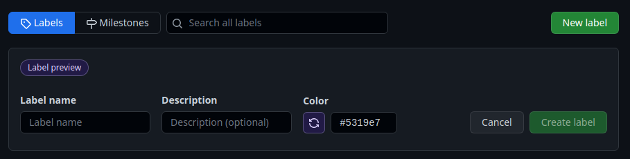
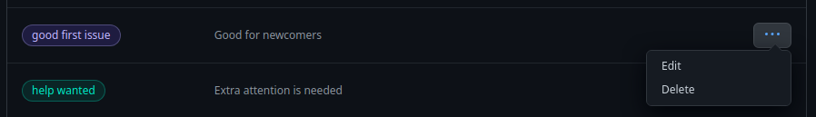
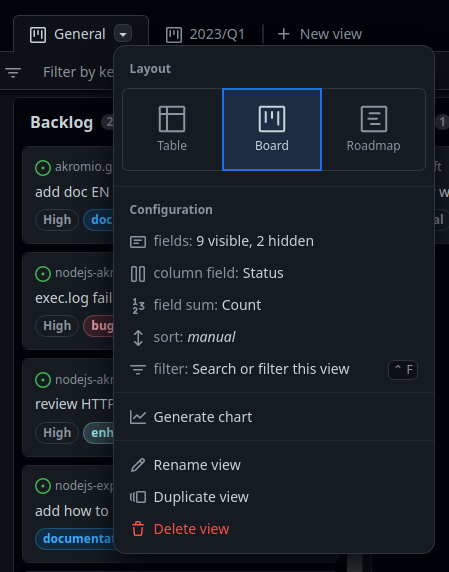
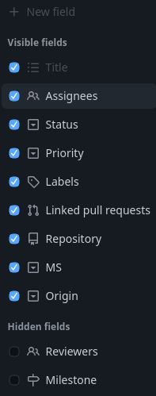

Etiquetas
Las etiquetas son muy importantes en el trabajo, porque proporcionan información extra de una tarea, propuesta o discusión. Vamos a analizarlas detenidamente.
Al finalizar, sabrá:
-
Qué es una etiqueta.
-
Cómo crear, modificar y suprimir etiquetas.
-
Cómo mostrar las etiquetas en los elementos de GitHub Projects.
-
Cómo filtrar los elementos de un proyecto asociados a una determinada etiqueta.
Introducción
Una etiqueta (label) sirve para categorizar y/o proporcionar información extra de alguna cosa. Se utilizan principalmente para proporcionar metadatos. Se definen a nivel de repositorio y se pueden aplicar a las propuestas (issues), a las solicitudes de integración (pull requests) y a las discusiones (discussions). Recuerde que si fija las etiquetas desde el formulario de un ítem del proyecto, lo está haciendo realmente en la propuesta asociada a él.
Las etiquetas tienen un nombre (name) para su identificación del resto; una descripción (description) que describe cuándo usarla; y un color que se utiliza principalmente para destacarla o resaltarla del resto fácilmente.
Atendiendo a quién las define, se distingue entre predefinidas y personalizadas. Una etiqueta predefinida (default label) es aquella que añade automáticamente GitHub al crear el repositorio. Mientras que una etiqueta personalizada (custom label), aquella que creamos nosotros mismos para añadir metadatos extras que no proporcionan las predefinidas.
Etiquetas predefinidas
Una etiqueta predefinidas (default label) es aquella que viene de fábrica con el repositorio. Podemos modificarlas e incluso suprimir aquellas que no sean de nuestro interés. En el momento de escribir estas líneas, tenemos:
| Etiqueta | Descripción |
|---|---|
| bug | Se asocia a cosas relacionadas directamente con un fallo. |
| documentation | Para representar un cambio en la documentación, ya sea una mejora o una añadidura. |
| duplicate | Indica que es un duplicado de otra cosa. Por ejemplo, si se asocia a una propuesta, indica que es un duplicado de otra ya existente. |
| enhancement | Representa una solicitud de cambio que proporciona nueva funcionalidad. |
| good first issue | Se utiliza para indicar que una propuesta puede ser ideal para una primera colaboración de alguien en el repositorio. |
| help wanted | Indica que se necesita ayuda para atender la propuesta. |
| invalid | Se asocia a una propuesta que no parece correcta. |
| question | Refleja que falta información. En una propuesta (issue), que necesitamos más información para poder comprenderla y, por ende, implementarla. |
| wontfix | Viene a decir que no se trabajará en ello. Tan pronto como se sabe que no se va a llevar a cabo, se marca con esta etiqueta y se cierra. |
Etiquetas personalizadas
Es posible que las etiquetas predefinidas no sean suficientes para resolver todas las situaciones de nuestro proyecto u organización particular. GitHub permite definir más etiquetas, las cuales conocemos como etiquetas personalizadas (custom labels).
Definición de una etiqueta personalizada
Para definir una nueva etiqueta:
-
Ir al repositorio de GitHub.
-
En la pestaña Issues, hacer clic en Labels y, a continuación, en New label. Aparecerá un formulario integrado con los datos de la nueva etiqueta:

-
Rellenar el formulario con los datos de la nueva etiqueta y hacer clic en Create label:

El nombre de la etiqueta debe ser descriptivo de su objetivo. Indique una descripción adecuada que describa cuándo usarla. El color debería ir acorde a su objetivo, si es una cosa urgente en la que debemos prestar especial atención, por ejemplo, utilice colores que se asocian a niveles altos de importancia como el rojo o el naranja. Si quiere representar algo que está listo, muy probablemente sea mejor un color como el verde.
Edición de etiquetas
Para modificar una etiqueta, iremos a la etiqueta y haremos clic en los tres puntos (...).
Esto mostrará su menú contextual y seleccionaremos Edit:

Supresión de etiquetas
Para la supresión de una etiqueta, seleccionaremos Delete del menú contextual de la etiqueta.
Análisis de nuestras propias etiquetas
Si está trabajando para una organización, debe ser la organización la que determine qué etiquetas deben utilizarse. En cambio, con proyectos personales, seremos nosotros mismos los que decidamos cuáles utilizar. En nuestro caso, vamos a utilizar las siguientes, aquellas predefinidas que no están en la lista se suprimen y las que no lo están se crean:
| Etiqueta | Tipo | Color | Descripción |
|---|---|---|---|
| bug | Predefinida | #d73a4a (rojo) | Describe un fallo en el software. |
| documentation | Predefinida | #0075ca (azul) | Representa una actualización de la documentación del proyecto. |
| duplicate | Predefinida | #cfd3d7 (gris) | Es un duplicado de otra propuesta. Se recomienda que en la documentación de la propuesta se indique de cuál es el duplicado. |
| help wanted | Predefinida | #008672 (verde) | Se necesita ayuda para atender la solicitud (issue). |
| invalid | Predefinida | #e4e669 (amarilla) | Propuesta inválida o que no tiene sentido. |
| question | Predefinida | #d876e3 (violeta) | Necesitamos más información sobre lo que se habla en la propuesta. |
| wontfix | Predefinida | #ffffff (gris) | Se descarta la propuesta. Se recomienda indicar en su documentación por qué se descarta. |
| lock | Personalizada | #D93F0B (naranja) | Hay algo que bloquea su continuidad. |
Tenga en cuenta que una propuesta puede tener asociadas tantas etiquetas como sea necesario. Por ejemplo, si su organización establece que toda nueva funcionalidad debe llevar a cabo el cambio en el código fuente y, además, actualizar la documentación del proyecto, tendrá tanto enhancement como documentation. Ahora bien, si su organización decide que cada tarea se asocie a una propuesta diferente, tendrá una con enhancement y la otra con documentation, teniendo esta segunda un enlace a la primera en su descripción. Esto hará que la segunda no se lleve a cabo hasta que la primera se haya realizado.
Vamos a hacer un poco más de hincapié en algunas etiquetas. En primer lugar, es posible que cuando un proyecto lleva cientos de propuestas, alguien abra una nueva que pueda ser un duplicado de otra, porque no buscó si ya existía o porque lo hizo pero no la encontró. Si esto es así, lo que se suele hacer es marcar esta nueva propuesta como duplicate, indicar cuál es la otra propuesta y cerrar el duplicado. Así la discusión se centra en la original y se evita hablar de ella en el duplicado. De la misma manera se puede actuar en GitHub Discussions. La idea es tener centrado el problema en un punto en vez de en varios.
Por otra parte, tenemos la etiqueta personalizada lock. Esta etiqueta se suele utilizar cuando estamos trabajando en algo pero, por la razón que sea, nos quedamos bloqueados. Puede ser porque nos encontremos con un problema que debería atenderse en su propia propuesta, porque está fuera del ámbito de la marcada como bloqueada; o porque estamos a la espera de que se termine otra que está pendiente o en desarrollo. Algunas organizaciones suelen llevar la propuesta a un estatus que indique que está bloqueada. Personalmente, considero que es mejor marcarla como bloqueada, dejarla en su estatus actual y esperar a que podamos continuar. La razón es básicamente que así sé dónde se quedó bloqueada viendo el propio tablero. En cualquier caso, en la documentación de la tarea bloqueada habrá que indicar por qué estamos bloqueados. Una vez podamos continuar, le quitaremos la etiqueta, indicando así que ya no está bloqueada, y continuaremos.
Si necesita poder echar un vistazo rápido a las cosas que tiene bloqueadas, puede crear su propia vista donde el filtro contenga el predicado label:lock. Esta vista sólo mostrará aquello que está bloqueado y podrá detectar posibles cuellos de botella. Pero como le digo, también puede crear un nuevo estatus o columna y mover la tarjeta ahí. Gustos, colores.
Cómo mostrar las etiquetas en GitHub Projects
Es muy fácil indicar que se muestren las etiquetas en un proyecto de GitHub Projects. No hay más que hacer lo siguiente:
-
Ir a la vista del proyecto en cuestión.
-
Mostrar su menú contextual y hacer clic en Configuration > fields:

-
Seleccionar el campo Labels, indicando así que se deben mostrar las etiquetas asociadas a cada elemento:

Filtrado de ítems de un proyecto por etiqueta
Es posible que necesitemos filtrar aquellos ítems del proyecto que tengan una determinada etiqueta. Esto se puede hacer de manera muy sencilla, yendo al proyecto y haciendo clic en la etiqueta en cuestión en cualquier ítem que la tenga. Automáticamente, añadirá el predicado label:nombreEtiqueta al filtro. También puede añadir este predicado directamente al filtro. Lo que mejor le vaya.
Si añade varios predicados al filtro, recuerde que sólo se mostrarán aquellos que cumplan todos ellos. Más adelante hablaremos detenidamente de los filtros.